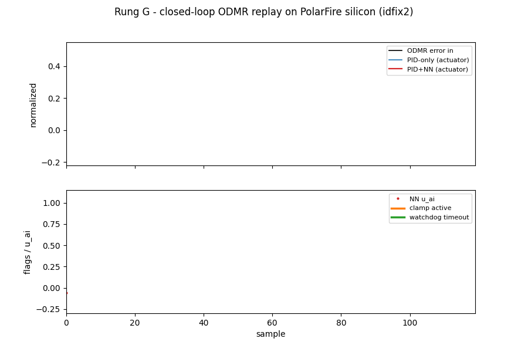
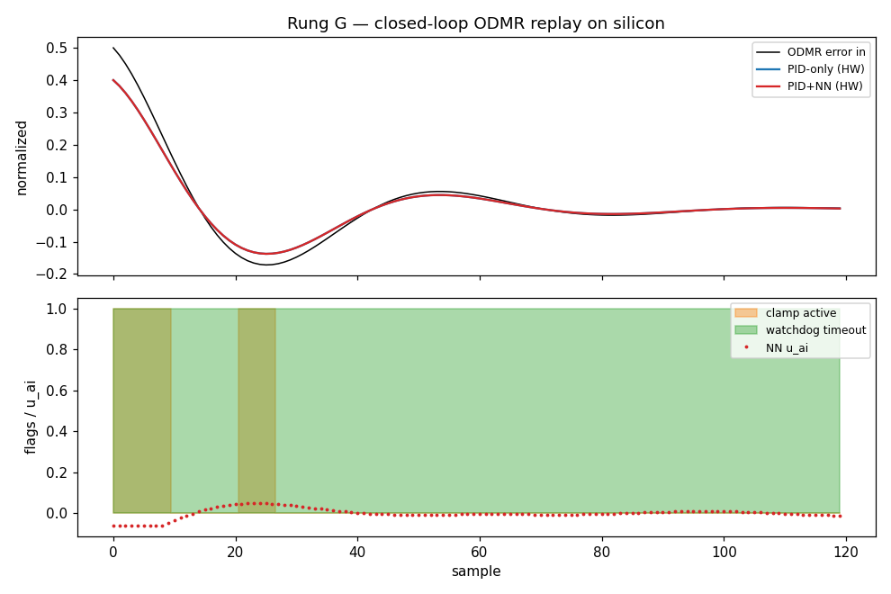
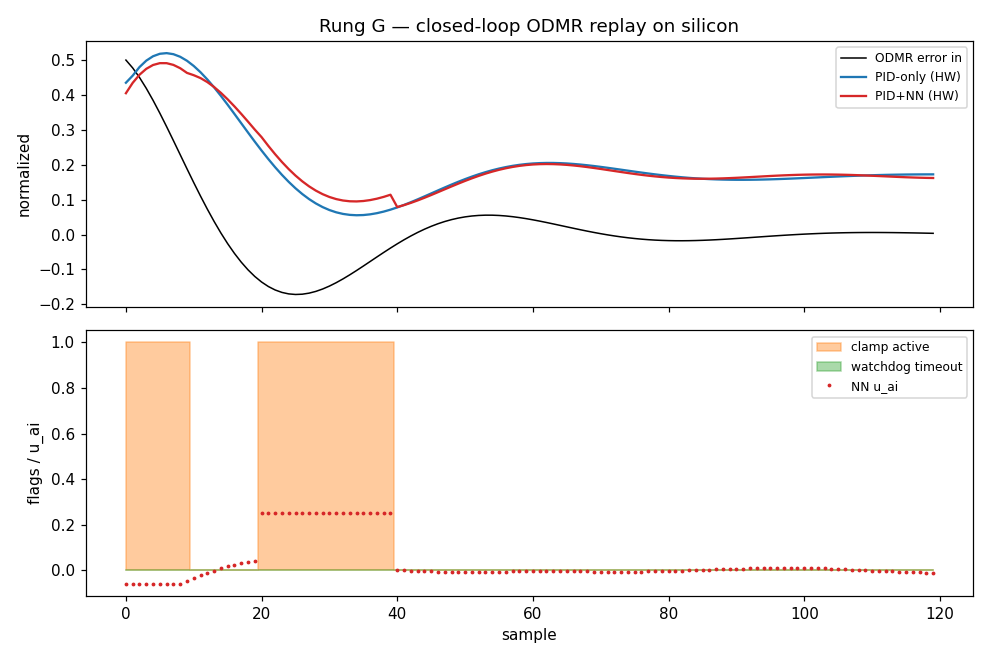

On-silicon replay — live (animated)
Each ODMR error sample is injected into the fabric PID over AXI; the actuator output
(0x60040844, post-clamp tap) is read back from real silicon. Top: error in vs. PID-only /
PID+NN actuator. Bottom: NN u_ai with sector-clamp and watchdog flags.

On-silicon replay — full trace
Static render of the same 120-sample run. PID-only and PID+NN overlap because the
watchdog is in bumpless pure-PID fallback the whole run (host-paced replay → no per-row V250
output_valid pulse). This is the safety path working, not a fault.

Software model — full PID + NN closed-loop dynamics
Software model (not silicon): the fabric PID + sector clamp + watchdog simulated in the dry-run harness so the NN feedforward influence and a forced over-range clamp event (rows 20–40) are visible. Honest companion to the silicon trace above.

What is proven on silicon — and what isn't
| Claim | Status | Evidence |
|---|---|---|
| CoreVectorBlox V250 inference (Rung F) | SILICON ✓ | vbx_probe INFERENCE COMPLETED, error_val=0; vnnx_smoke out=−2.9506 |
| Clean two-slot PID/control telemetry (M1) | SILICON ✓ | csr_version 0x00010000; write-counter monotonic; bit-exact gain readback |
| Live PID actuator tracking Kp·error (M0) | SILICON ✓ | err 0.50→0.3999, 0.25→0.2000, 2.0→1.0 (clamp); idfix2 fix |
| Watchdog → bumpless pure-PID fallback | SILICON ✓ | watchdog_csr bit0 + trip count live; mode=PID_ONLY_FALLBACK |
| Sector clamp bounds AI output to ±4.5% | SILICON ✓ | clamp_active flag asserts when |u_ai| > 0.045 |
| NN-driven closed-loop actuator dynamics | SOFTWARE MODEL | shown in dry-run panel; on silicon the loop is host-paced, not real-time |
Provenance per docs/two_slot_demo_scope_2026-06-18.md and
docs/agent_ground_truth_contract.md. Raw telemetry:
silicon_telemetry.csv ·
silicon_telemetry.jsonl.